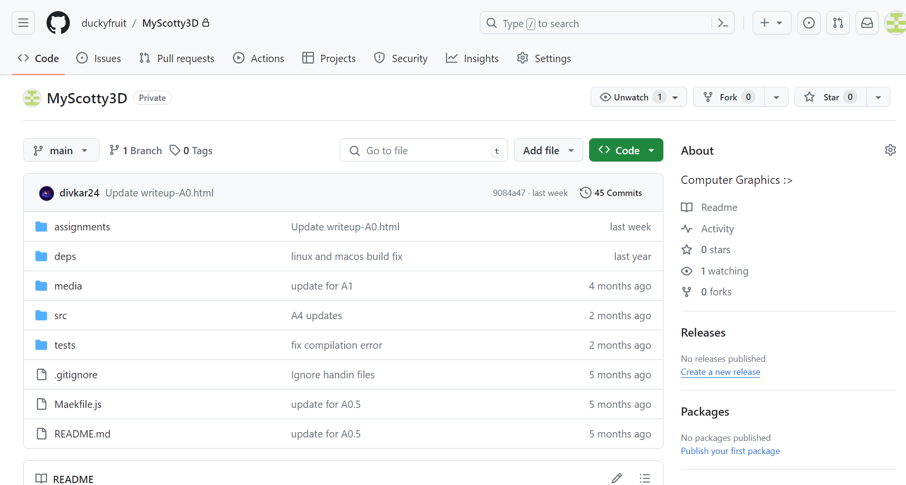
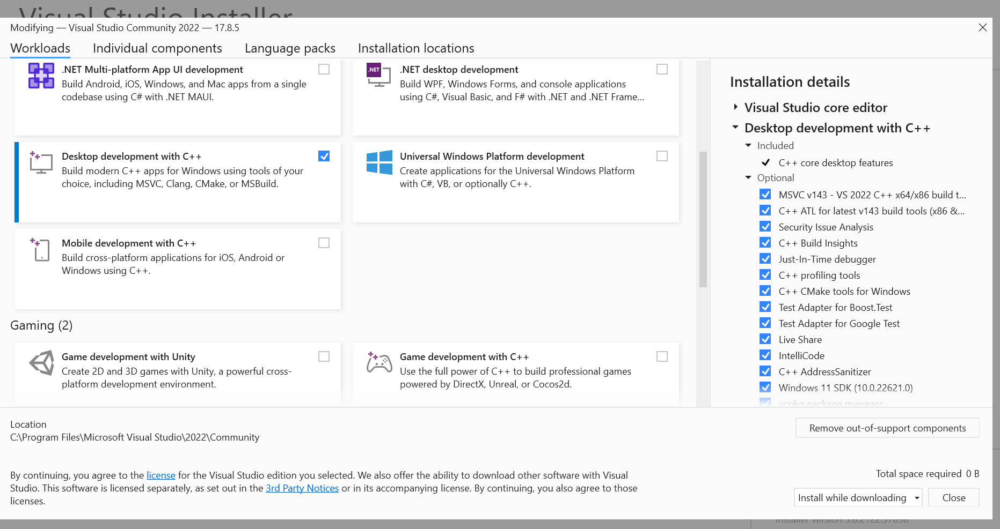
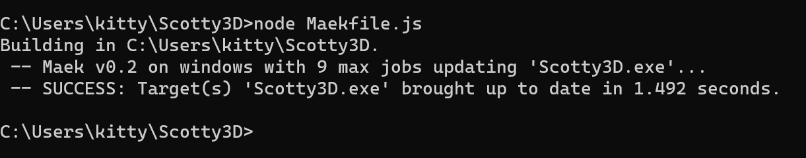
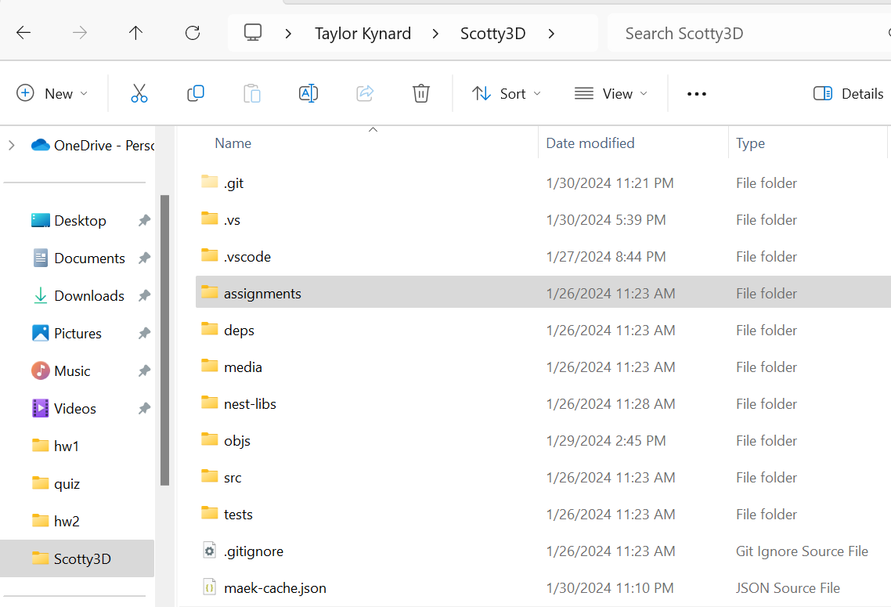

**Assignment 0 Report**
AndrewID: tkynard
(##) About this template
* You can view your writeup by opening it in a browser - right click this file and open with your browser of choice.
* Replace reference images with your own screenshots or renders when applicable.
* Include descriptions of any encountered problems and the time you spent on each task.
(##) A0T1
Step 1: Clone

Step 2: General Setup
Visual Studio:

Node:

Nest-libs:

Step 3: Build and Run
(##) A0T2
Your completion of this task will be graded based on your `test.a0.task2.problems.cpp` file and your responses to the below questions.
For each of the problems you solved in task 2, characterise the bug in your own words and explain one other scenario that may cause this
type of bug.
Problem 1: There was a missing semicolon on line 21, also cour is a typo of std::cout, Another scenario with this bug would be if you accidentally type flot instead of float.
Problem 2: The math used in the filter was with ints instead of float types, so the result rounded down and incorrectly filtered the data (casting error). Another scenario that could cause this bug is if you accidentally truncate a float and the outcome is different than expected.
Problem 3: The end() function does not return the last element, but goes one after the last element which points to nothing. Another scenario that could cause this bug would be if you go out of bounds when looping through a vector.
Problem 4: Checking if all three values are equal to each other cannot be done with (a == b) == c, you must separate them out and use && since if a == b, it becomes 1 and if a != b it becomes 0. Another scenario that could cause this bug would be if instead you did
a == b == c, which doesn't work because the compiler reads left to right and would give the same issue as before.
(##) A0T3
You do not need any screenshots for this task. Your completion will be graded based on your `src` submission.
(##) Feedback
Use this section to provide feedback about the assignment.
I liked the assignment; I was a little stuck because I didn't know I could command click in VScode and that would bring me to the function I was hovering over,
but other than that it was cool!